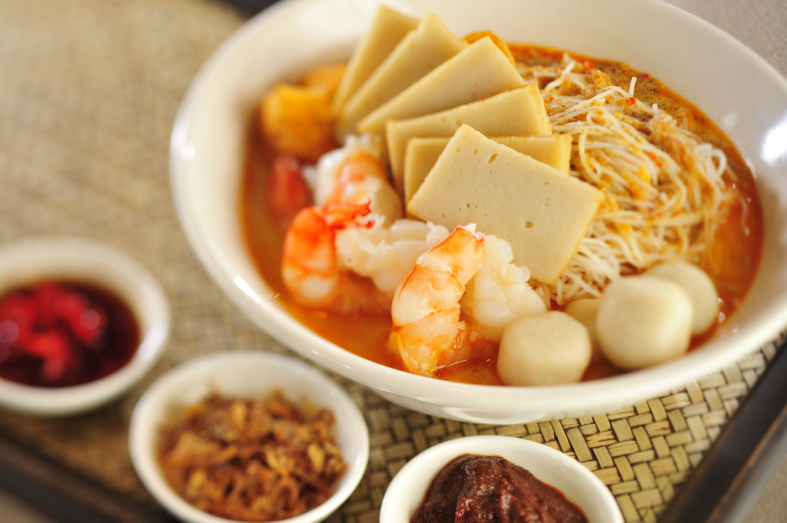

SUSHI
JAPAN
Sushi (すし, 寿司, 鮨?) is the Japanese preparation and serving of specially prepared vinegared rice (鮨飯 sushi-meshi) combined with varied ingredients (ネタ neta) such as chiefly seafood (often uncooked), vegetables, and occasionally tropical fruits. Styles of sushi and its presentation vary widely, but the key ingredient in all cases is the sushi rice, also referred to as shari (しゃり), or sumeshi (酢飯). Sushi can be prepared with either brown or white rice. It is often prepared with raw seafood, but some common varieties of sushi use cooked ingredients, and many other sorts are vegetarian. Sushi is often served with pickled ginger, wasabi, and soy sauce. Daikon radish is popular as a garnish. Sushi is often confused with sashimi, a related Japanese dish consisting of thinly sliced raw meat or fish and an optional serving of rice. Sashimi is served as slices, unlike sushi, which is served as rolls.
KARAGEE
JAPAN
Karaage (唐揚げ or 空揚げ or から揚げ? [kaɾaaɡe]) (approximately KAH-rah-AH-ge in English), is a Japanese cooking technique in which various foods—most often chicken, but also other meat and fish—are deep fried in oil. The process involves optional marinating small pieces of the food in a sauce, then lightly coating it with a seasoned wheat flour or potato starch mix, and frying in a light oil. It is similar in technique to the preparation of tempura.
THAI MILK TEA
THAI
Thai tea, also known as Thai iced tea (Thai: ชาเย็น, rtgs: cha yen, [t͡ɕʰāː jēn] ( listen), lit. "cold tea"), is a Thai cold or hot drink made from tea, milk and sugar. It is popular in Southeast Asia and is served in many restaurants that serve Thai food.The drink is made from strongly brewed Ceylon tea, or a locally grown landrace (traditional or semi-wild) version of Assam known as Bai Miang (ใบเมี่ยง)[2]. Other ingredients may include added orange blossom water, star anise, crushed tamarind seed or red and yellow food coloring, and sometimes other spices as well. The tea is sweetened with sugar and condensed milk and served chilled. Evaporated milk, coconut milk or whole milk is poured over the tea and ice before serving to add taste and creamy appearance. Condensed milk and sugar may also be mixed with the tea before it is poured over ice and then topped with evaporated milk. In Thai restaurants, it is served in a tall glass, but when sold from street and market stalls in Thailand it may be poured over the crushed ice in a plastic bag or tall plastic cups. It may also be made into a frappé at some vendors.[citation needed] Although Thai tea is not the same as bubble tea, a Southeast and East Asian beverage that contains large tapioca pearls, Thai tea with tapioca pearls is a popular flavor of bubble tea.[citation needed].
BAKSO
INDONESIA
Bakso or baso is Indonesian meatball, or meat paste made from beef surimi. Its texture is similar to the Chinese beef ball, fish ball, or pork ball. The term bakso could refer to a single meatball or the whole bowl of meatballs soup. Bakso can be found all across Indonesia; from the traveling cart street vendors to restaurants. Next to soto, satay and siomay, bakso is one of the popular street food in Indonesia. Today, various types of ready to cook bakso also available as frozen food commonly sold in supermarkets in Indonesia.Bakso is commonly made from finely ground beef with a small quantity of tapioca flour and salt, however bakso can also be made from other ingredients, such as chicken, pork, fish or shrimp. Unlike other meatball recipes, bakso has a consistent firm, dense, homogeneous texture due to the polymerization of myosin in the beef surimi. As most Indonesians are Muslims which observes halal dietary law, generally bakso is made from beef, chicken or the mixture of beef with chicken. While in non-Muslim majority areas, such as in Chinatowns in major cities and Hindu majority island of Bali, pork bakso might be found. Traditionally the beef surimi paste or dough is made into balls using hands and boiled in hot water right away. After the meat are done, the meatballs are floating on boiling water, collected and being dried, stored or refrigerated for further use. Bunch of pre-cooked bakso are usually displayed in the window of a street vendor cart, and will be boiled in hot water per customer order, prior of serving. Bakso are usually served in a bowl of beef broth, with yellow noodles, bihun (rice vermicelli), salted vegetables, tofu, egg (wrapped within bakso), Chinese green cabbage, bean sprout, siomay or steamed meat dumpling, and crisp wonton, sprinkled with fried shallots and celery. Slices of bakso often used and mixed as compliments in mi goreng, nasi goreng, or cap cai recipes.
AYAM PENYET CHRICPY
INDONESIA
Ayam penyet (Javanese for: smashed fried chicken) is Indonesian — more precisely East Javanese cuisine — fried chicken dish consisting of fried chicken that is smashed with the pestle against mortar to make it softer, served with sambal, slices of cucumbers, fried tofu and tempeh. In Indonesia penyet dishes, such as fried chicken and ribs are commonly associated with Surabaya, the capital city of East Java. The most popular ayam penyet variant is ayam penyet Suroboyo. Today ayam penyet is commonly found in Indonesia, Malaysia and Singapore. Catherine Ling of CNN describes ayam penyet as one of the "40 Singapore foods we can't live without". It has recently surged in popularity across Southeast Asia, where various chains of franchises has opened selling the dish along with other Indonesian delicacies. It is also known for its spicy sambal, which is made with a mixture of chilli, anchovies, tomatoes, shallots, garlics, shrimp paste, tamarind and lime juice. Like its namesake, the mixture is then smashed into a paste to be eaten with the dish. See
CENDOL
INDONESIA
Cendol /ˈtʃɛndɒl/ is a traditional dessert popular in Southeast Asia such as : Indonesia, Malaysia, Singapore, Brunei, Cambodia, East Timor, Vietnam, Thailand and Burma.Indonesian dictionary describes cendol as a snack made from rice flour and other ingredients that are formed by filters, then mixed with palm sugar and coconut milk (for beverage). There is a popular belief in Indonesia that the name "cendol" is related to, and originated from, the word jendol, in reference to the swollen green worm-like rice flour jelly; in Javanese, Sundanese, Indonesian and Malay, jendol means "bump," "bulge,"[3] or "swollen."In most parts of Indonesia, cendol refer to the green rice flour jelly; while the concoction of that green rice flour jellies with coconut milk, shaved ice, areca palm sugar and sometimes diced jackfruit is called es cendol or dawet (in Central and East Java). In Vietnam, this worm-like rice flour concoction is called bánh lọt or "fall through cake". Bánh lọt is a common ingredient in a Vietnamese dessert drink called chè, or more commonly chè ba màu. In Thailand it is called lot chong (Thai: ลอดช่อง, pronounced [lɔ̂ːt t͡ɕʰɔ̂ŋ]) which can be translated as "gone through a hole", indicating the way it is made by pressing the warm dough through a sieve into a container of cold water.[5] In Burma it is known as mont let saung or မုန့်လက်ဆောင်း. In Cambodia, it is known as lot.
PAPAYA SALAD
THAI
A dish of green papaya salad, made with papaya, beans, chili, pla ra, brined crab, hog plum, and lime Alternative names Bok l'hong, tam som, som tam and gỏi đu đủ Type Salad Place of origin Thailand, Laos Region or state Nationwide. Green papaya salad is a spicy salad made from shredded unripe papaya. It is of Lao origin but it is also eaten throughout Southeast Asia. Locally known in Cambodia as bok l'hong (Khmer: បុកល្ហុង, pronounced [ɓok lhoŋ]), in Laos as tam som (Lao: ຕໍາສົ້ມ) or the more specific name tam maak hoong (Lao: ຕໍາໝາກຫຸ່ງ, pronounced [tàm.ma᷆ːk.hūŋ]), in Thailand as som tam (Thai: ส้มตำ, pronounced [sôm tām]), and in Vietnam as gỏi đu đủ. Som tam, the Thai variation, was listed at number 46 on World's 50 most delicious foods compiled by CNN Go in 2011.
BIRYANI
INDIA
Biryani (pronounced [bɪr.jaːniː]), also known as biriyani or biriani, is a South Asian mixed rice dish with its origins among the Muslims of the Indian subcontinent. It is popular throughout the subcontinent and among the diaspora from the region. It is generally made with spices, rice, and meat.The word "biryani" is an Urdu word derived from the Persian language, which was used as an official language in different parts of medieval India, by various Islamic dynasties.One theory is that it originates from "birinj", the Persian word for rice.Another theory is that it derives from "biryan" or "beriyan" (to fry or roast).
SHABU SHABU
JAPAN
Shabu-shabu (しゃぶしゃぶ? , also spelled syabu-syabu) is a Japanese nabemono hotpot dish of thinly sliced meat and vegetables boiled in water. The term is onomatopoeia, derived from the sound emitted when the ingredients are stirred in the cooking pot and served with dipping sauces.[citation needed] The food is cooked piece by piece by the diner at the table. Shabu-shabu is considered to be more savory and less sweet than sukiyaki.Shabu-Shabu was introduced in Japan in the 20th century[citation needed] with the opening of the restaurant "Suehiro"in Osaka, where the name was invented. Its origins are traced back to the Chinese hot pot known as instant-boiled mutton (Shuàn Yángròu). Shabu-Shabu is most similar to the original Chinese version when compared to other Japanese dishes (nabemono) such as sukiyaki.[citation needed] Suehiro registered the name as a trademark in 1955. Together with sukiyaki, Shabu-Shabu is a common dish in tourist hot-spots, especially in Tokyo, but also in local Japanese neighborhoods (colloquially called "Little Tokyos") in countries such as the United States and Canada.
LASAGNE
ITALY
Lasagne (/ləˈzænjə/ or /ləˈzɑːnjə/ or /ləˈsɑːnjə/, Italian pronunciation: [laˈzaɲɲe], singular lasagna) are wide, flat-shaped pasta, and possibly one of the oldest types of pasta. The word "lasagne", and, in American English, the singular "lasagna", can also refer to a dish made with several layers of lasagne sheets alternated with sauces and various other ingredients. Lasagne originated in Italy during the Middle Ages and has traditionally been ascribed to the city of Naples (Campania). The first recorded recipe was set down in the early 14th century Liber de Coquina (The Book of Cookery).It bore only a slight resemblance to the later traditional form of lasagne, featuring a fermented dough, flattened into a thin sheet, boiled, sprinkled with cheese and spices, and then eaten with the use of a small pointed stick. Other recipes written in the century following the Liber de Coquina recommended boiling the pasta in a chicken broth and dressing it with cheese and chicken fat, or in one case walnuts, in a recipe adapted for the Lenten fast. The traditional lasagne of Naples, lasagne di carnevale, is layered with local sausage, small fried meatballs, hard-boiled eggs, ricotta and mozzarella cheeses, and sauced with a Neapolitan ragù.Lasgne al forno, layered with a thicker ragù and Béchamel sauce and which corresponds to the most common version of the dish outside Italy, is traditionally associated with Emilia-Romagna. In other regions lasagne can be made with various combinations of ricotta or mozzarella cheese, tomato sauce, various meats (e.g., ground beef, pork or chicken), miscellaneous vegetables (e.g., spinach, zucchini, olives, mushrooms), and is typically flavored with wine, garlic, onion, and oregano. In all cases, the lasagne are oven-baked. Traditionally, pasta dough prepared in Southern Italy used semolina and water and in the northern regions, where semolina was not available, flour and eggs. Today in Italy, since the only type of wheat allowed for commercially sold pasta is durum wheat, commercial lasagne are made of semolina (from durum wheat). Emilia-Romagna's intensive farming economy in the northern region of Italy results in plentiful dairy and meat products, and their commonality in regional cooking – more so than the olive oil found in southern regions of Italy. Pastas from Emilia-Romagna and its capital, Bologna, are almost always served with a ragù, a thick sauce made from ingredients such as onions, carrots, finely ground pork and beef, celery, butter, and tomatoes.

LAKSA
SINGAPORE
Laksa is a popular spicy noodle soup in the Peranakan cuisine.Laksa consists of rice noodles or rice vermicelli with chicken, prawn or fish, served in spicy soup; either based on rich and spicy curry coconut milk, or based on sour asam (tamarind or gelugur). It can be found in Malaysia, Singapore, Indonesia and Southern Thailand.There are various theories about the origins of laksa. In Indonesia, the dish is believed to have been born from the Chinese coastal settlements and the mixing of cultures between Chinese merchants and the local cooking practices. As Peranakan Chinese communities have blended their ancestors' culture with local culture, Peranakan communities in different places now demonstrate diversity according to the local flavour. In Malaysia, the dish is believed to have been introduced by Chinese immigrants in Malacca.In Singapore, the dish (or its local "Katong" version) is believed to have been created after interaction between the Peranakans with the local Singaporeans.